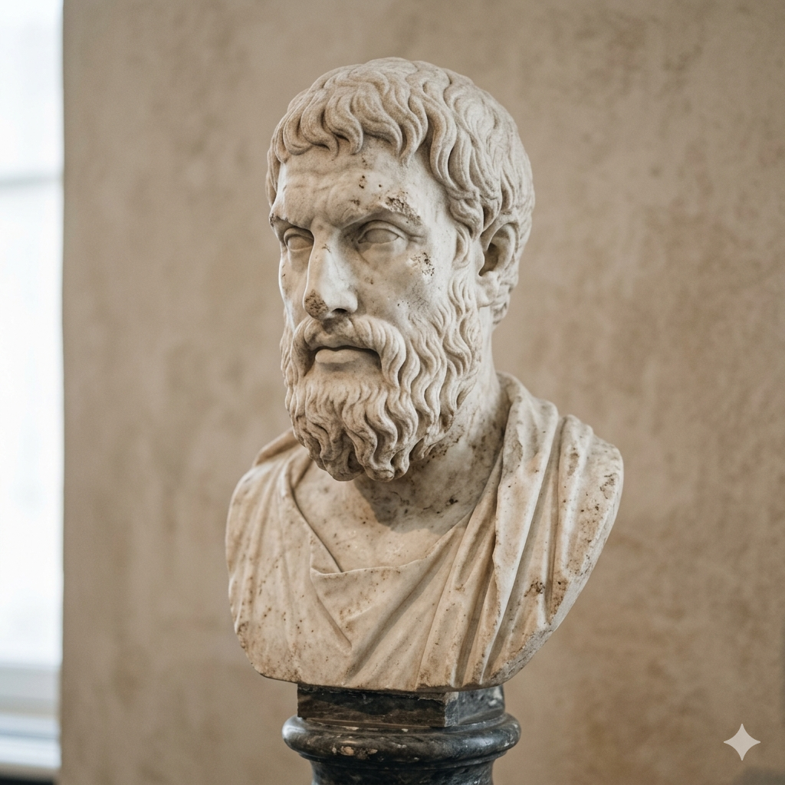
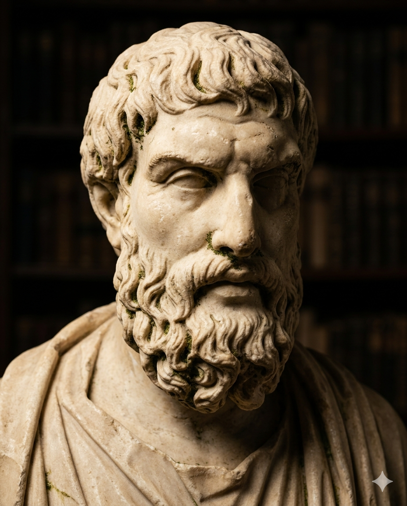
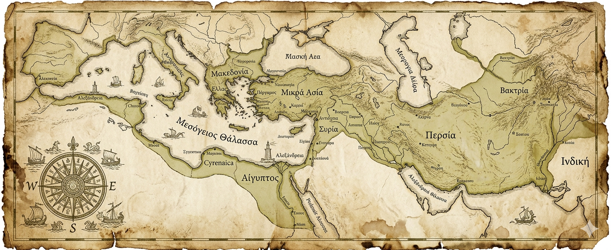
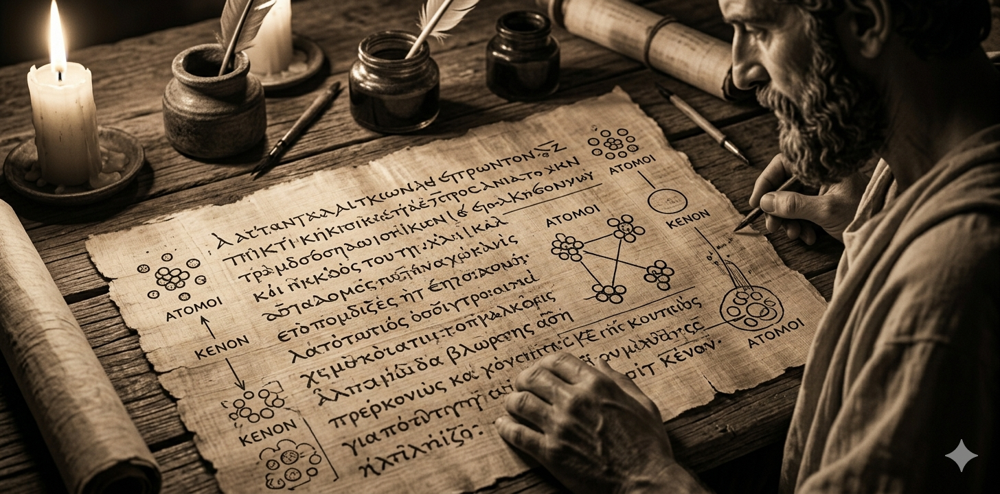
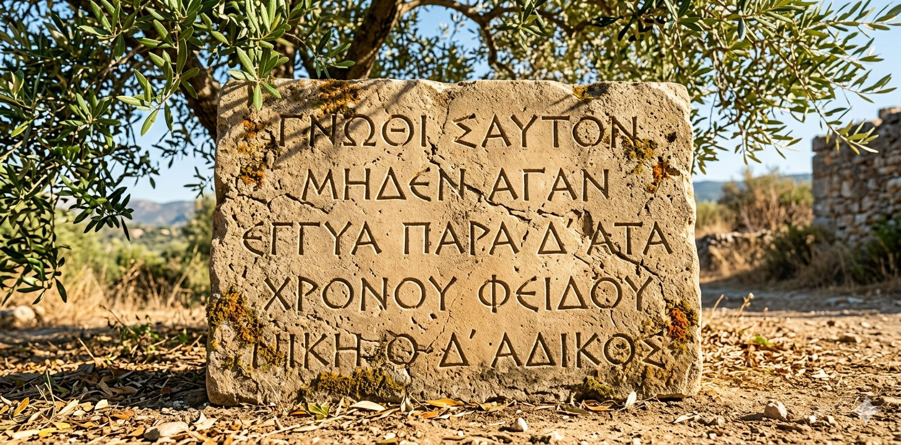
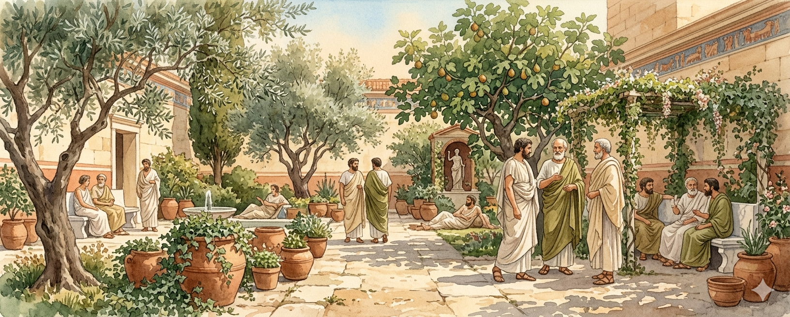

«La muerte no es nada para nosotros»
Epicuro (341–270 a.C.), filósofo griego, fundó el Jardín y enseñó que la felicidad se alcanza mediante la comprensión del placer y la eliminación de los temores.
¿Quién fue Epicuro?

Nació en la isla de Samos en el 341 a.C. y desarrolló su actividad intelectual en Atenas, donde fundó "El Jardín". Su escuela se distinguió por admitir a hombres, mujeres y personas de toda condición social.
El objetivo de la vida es alcanzar la aponía (ausencia de dolor físico) y la ataraxia (tranquilidad del alma), mediante la moderación y la eliminación de temores irracionales.
Origen
Nació en Samos (341 a.C.) y filosofó en Atenas.
El Jardín
Escuela inclusiva, abierta a todos sin distinción.
Aponía
Ausencia de dolor físico.
Ataraxia
Tranquilidad del alma, libre de miedos.
Contexto histórico
Epicuro vivió durante el período helenístico, iniciado tras la muerte de Alejandro Magno (323 a.C.). Las polis griegas se debilitaron y la filosofía se orientó hacia la felicidad individual.

Muerte de Alejandro Magno
Nacimiento de Epicuro
Fundación del Jardín
Muerte de Epicuro
Lucrecio difunde el epicureísmo
Obras principales
Carta a Meneceo
Ética. La muerte no debe temerse. El placer es el fin; clasificación de los deseos.
Jugar a clasificar
Carta a Heródoto
Física. Todo está compuesto de átomos y vacío. Universo infinito; dioses no intervienen.

Máximas Capitales
Sentencias breves: placer supremo, prudencia y amistad como mayor bien.
🧩 Clasifica los deseos según Epicuro
Arrastra cada deseo a la categoría que corresponde.
Naturales y necesarios
Naturales pero no necesarios
Ni naturales ni necesarios
📜 Máximas Capitales (toca para leer)
Datos curiosos – El Jardín Secreto

Preguntas frecuentes
¿Por qué Epicuro dice que la muerte no es nada para nosotros?
Porque mientras vivimos, la muerte no está presente; cuando ocurre, dejamos de existir y no hay sensación alguna.
¿Buscar el placer no conduce al desenfreno?
No en el epicureísmo: el placer supremo es la ausencia de dolor (aponía) y la serenidad del alma (ataraxia).
¿Qué diferencia hay entre aponía y ataraxia?
Aponía: ausencia de dolor físico. Ataraxia: tranquilidad mental.
¿Epicuro era ateo?
No. Creía que los dioses existen, pero no intervienen en asuntos humanos.
¿Por qué la amistad era tan importante?
Brinda seguridad y apoyo; Epicuro la consideraba el mayor bien que la sabiduría ofrece.